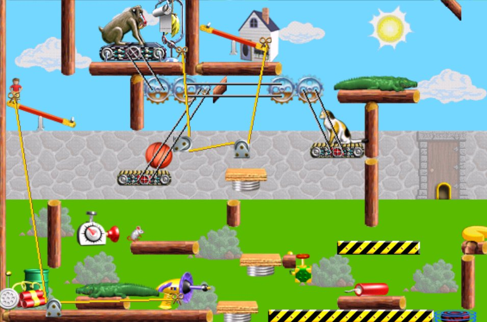

PC用ゲーム「インクレディブル・マシーン」関係 2025/11/4更新
インクレディブル・マシーン（The
Incredible Machine）の自家製パズル（homemade puzzle）を探してみた
ピタゴラスイッチのような装置を組み立てるという内容の過去のPC用名作パズルゲーム「インクレディブル・マシーン」（https://ja.wikipedia.org/wiki/インクレディブル・マシーン）は今やネットでも情報は少ない。唯一まとまった情報が公開されているのは
「for all increyers」（https://sites.google.com/site/for-all-incrayers/）
のみの様子。ただし 新規コンテンツは無い。
インクレディブル・マシーンにはメーカー製のパズルが収録されているが、それとは別にプレイヤーが自家製パズルを作成することができる。かつては色々な人が作成してネットに公開していたものだが今や日本語のパズルは上記サイトの「自家製パズル」と「for
all incrayersアーカイブ」とから入手できるだけ。それでも1000個以上のパズルを入手可。その「自家製パズル」については
インターネット・アーカイブ上の過去のページ
https://web.archive.org/web/20080309033048/http://ist.oops.jp/tim/index.php?%BC%AB%B2%C8%C0%BD%A5%D1%A5%BA%A5%EB%C1%D2%B8%CB
で説明を見ることができる。
海外で自家製パズルを公開している個人サイトは
「The Incredible Machine: Contraptions Levels」（https://www.kieranmillar.com/incmachine/）
しか見つからなかった。
海外ではかつて TIM-Exchange.com
というフォーラムがあって色々な人が自家製パズルをアップロードしていたようだ。それらをまとめた
Tim-Exchange+Contraptions+Database+2007+to+2012.zip
というファイルが
https://mega.nz/#!F4AF1YjK!N9ncxXjVVQQbJYOLOknuISg4C5Yqorpxw9FAcCDMAgA
や
https://archive.org/details/tim-exchange-contraptions-database-2007to-2012.zip
からダウンロードできる。中身は整理されておらず誰が何を作成したのか不明で玉石混交だろうが1500個以上のパズルを入手可。
インクレディブル・マシーンの購入
肝心のゲーム本体は gog.com で「The Incredible Machine
Mega Pack」という名前の復刻版（英語版）を安価で購入できる。（https://www.gog.com/game/the_incredible_machine_mega_pack
）
パックには、
1. 「もっともっとインクレディブル・マシーン」(The
Even More Incredible Machine)
2. 「インクレディブル・マシーン3」（The
Incredible Machine 3）
3. 「インクレディブル・マシーン
コントラプションズ」（Return of The Incredible Machine:
Contraptions）
4. 「インクレディブル・マシーン
コントラプションズ2」（The Incredible Machine: Even
More Contraptions）
の４作が入っている。
前記 for all increyers のパズルは2.用であるが、3.、4.でも動作する。2.ではパズルの日本語タイトルが文字化けするがゴールの記述は日本語で読める。3.、4.ではゴールも文字化けする。その場合でもパズルファイル（*.TIM）を「メモ帳」等のテキストエディターで開くと冒頭に書かれているタイトルとゴールとを日本語で読むことができる。
海外製のパズルはいずれも3.、4.用。
インクレディブル・マシーンのヘルプファイル（*.HLP）を
Windows 10/11 で開く方法
上記2.、3.、4.のヘルプファイルは旧型式のヘルプファイル（*.HLP）である。マイクロソフトは旧型式のヘルプファイル（*.HLP）を
Windows 10/11 で開けなくしてしまっているためゲーム中からヘルプをクリックしても開けない。
Googleで「Windows10・11用WinHlp32.exeインストールバッチファイル」と検索すると開く方法がわかる。
インクレディブル・マシーン3
の表示を大きくする方法
インクレディブル・マシーン3 はウィンドウ表示で、Windowsの解像度が高い場合
表示が小さくなってしまう（他の３作は全画面表示で問題なし）。Windowsの解像度を変更してプレイすればいいのだが一々設定変更するのはちょっと面倒。
DisplayChange（https://www.vector.co.jp/soft/mac/util/se034470.html
）というフリーソフトを使うと起動時に解像度を変更して終了時に元に戻すというショートカットを作ることができて便利。
インクレディブル・マシーン3
のBGMを Windows 10/11 で高品質再生する方法
VirtualMIDISynth というフリーソフトを導入する。（https://www.gigafree.net/media/midi/VirtualMIDISynth.html）
ちなみにMIDIマッパー設定時の選択肢にある
Microsoft GS Wavetable Synth は Windows に標準搭載の貧弱なMIDI音源。VirtualMIDISynth
で良いサウンドフォントを使うと全然違う音を楽しめる。
インクレディブル・マシーン3
の日本語版
インクレディブル・マシーン3 の日本語版Windows
95/98用の中古品がアマゾンで ぼったくり価格で出品されているようだ。私は昔買ったものを持っているが、Windows
10では次のようにすれば動作する。
1. CD-ROM中の TIMWIN
フォルダーをハードディスクのどこかにコピーする。
2. その中の TIMWIN.EXE を右クリックしプロパティを選び「互換性」タブの「互換モード」で
Windows 95 に設定する。
3. TIMWIN.EXE を起動する。
「インクレディブル・マシーン
コントラプションズ2」の画面例
